Next lesson in:
XXX TBD
Is Everyone Ready to Learn?
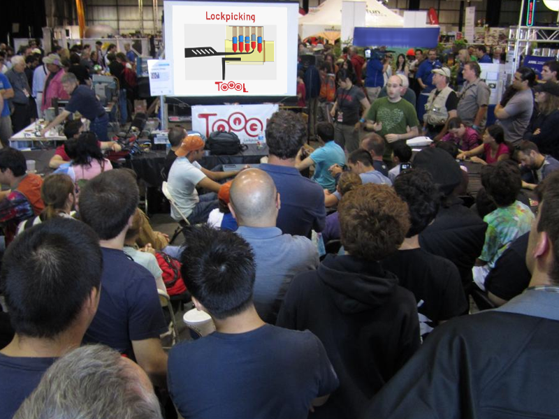Is Everyone Ready to Learn… About Lockpicking?
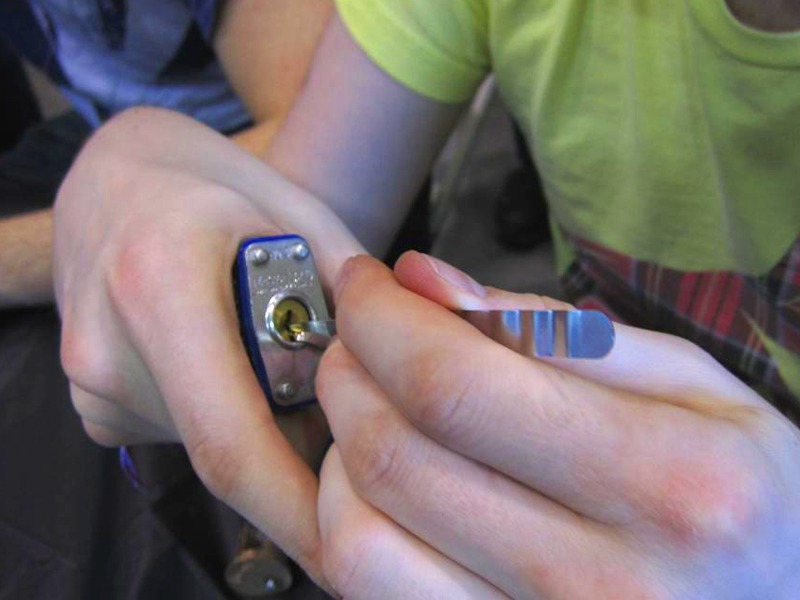Lockpicking is Fun, Fun, Fun!
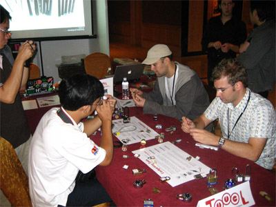 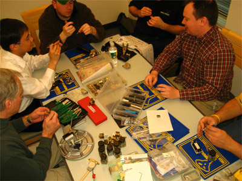 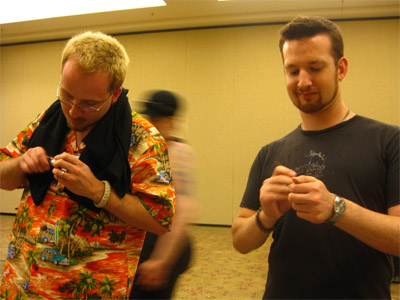 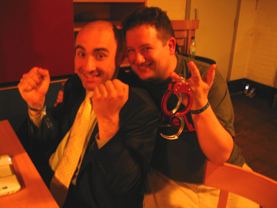First. a word about rules…
Yes. we have rules. ☺
- Do not pick someone else's locks.
- Do not pick your locks… if you rely on them.
The Three Kinds of Lock-Opening
The Three Kinds of Lock-Opening
-
Lockpicking - what we do
TOOOL provides the knowledge and the means -
Quick & Dirty - what criminals do
TOOOL provides knowledge… but no means -
Covert & High-Tech - what spies do
TOOOL provides neither knowledge nor means
Lockpicking is Easy!
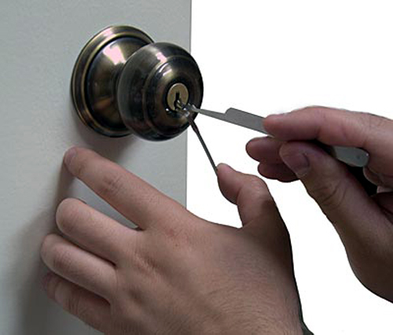Doorknobs…
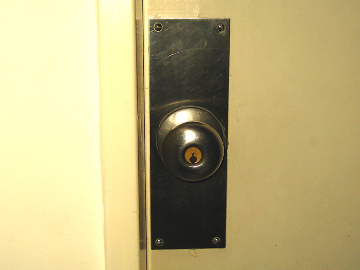Padlocks…
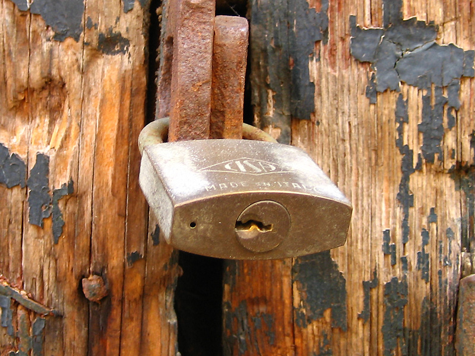Deadbolts…
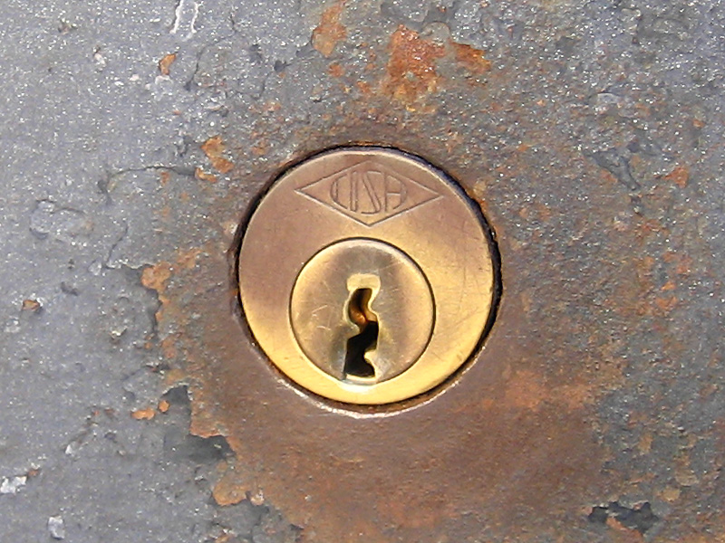…The Mechanism Itself Is All The Same
XXX TBD…The Mechanism Itself Is All The Same
XXX TBDHow It Looks Inside
XXX TBDAttempt Without a Key
XXX TBDOperating With a Key
XXX TBDPin Stacks
XXX TBDUsing a Key
XXX TBDUsing Lockpicks
XXX TBDSo why is Lockpicking Possible
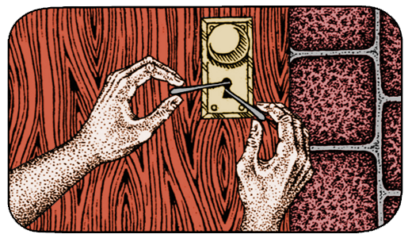In a Perfect World The Parts Would Function Like This…
XXX TBDParts In the Real World Look Like This…
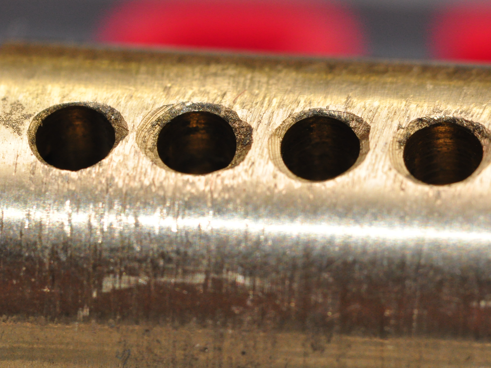Parts In the Real World Look Like This…
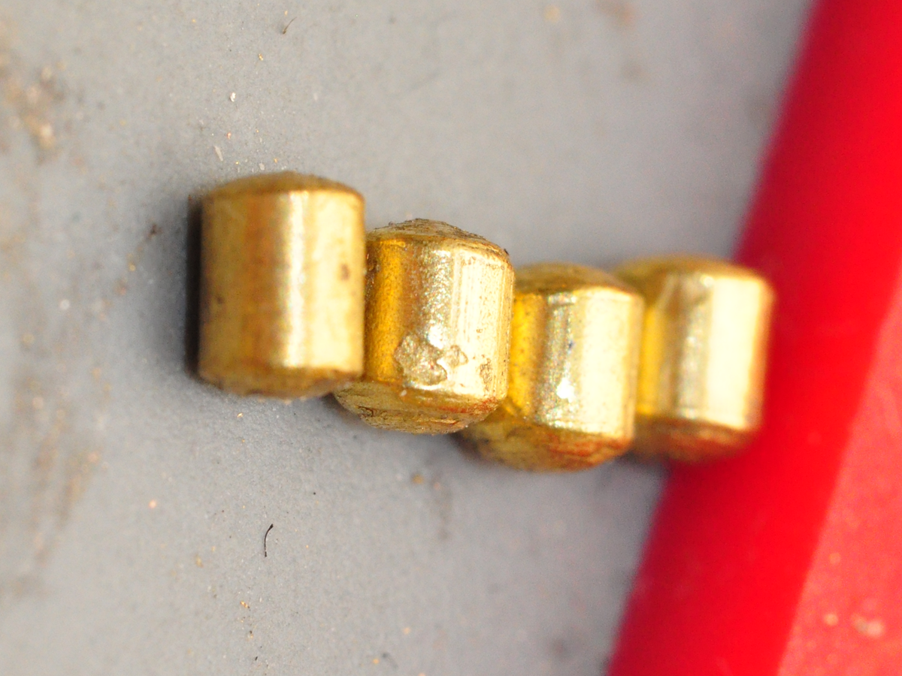Parts In the Real World Look Like This…
XXX TBD“Setting” a Binding Pin by Turning & Lifting the Stack
XXX TBDSetting Multiple Pins
XXX TBDTake Caution to Avoid Over-Lifting
XXX TBDOther Tools One Uses
Raking Tools
XXX TBDRaking Tools
XXX TBDThe Half-Diamond
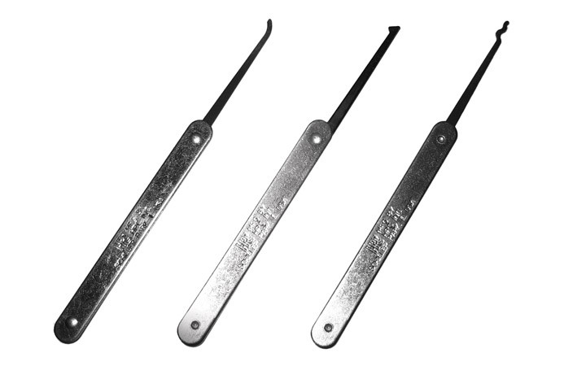Lifting with a Half-Diamond
XXX TBDRaking / Shoveling with a Half-Diamond
XXX TBDUsing the Flat Underside
XXX TBDCounting Pin Stacks
XXX TBDCounting Pin Stacks
XXX TBDTurning the Plug
Bad Turning Tool Usage (Pulling)
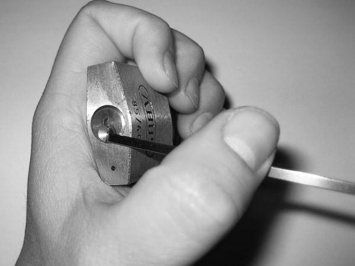Better Turning Tool Usage (Pushing)
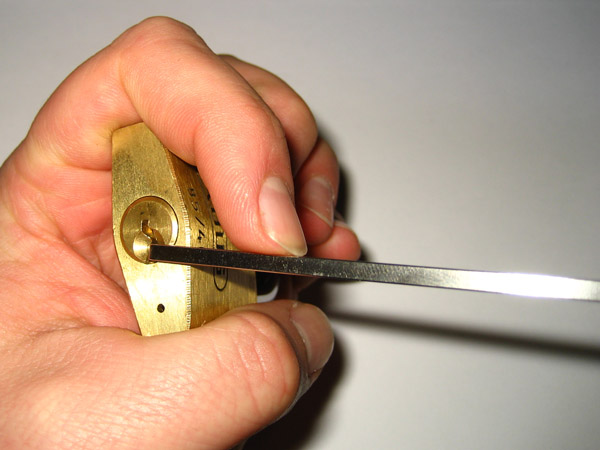Best Turning Tool Usage (Pushing Out at Tip)
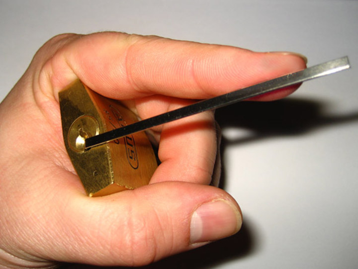Good Turning Tool Pressure
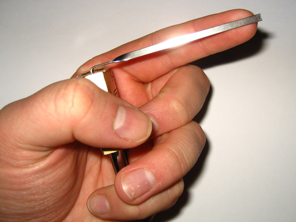Too Much Turning Tool Pressure!
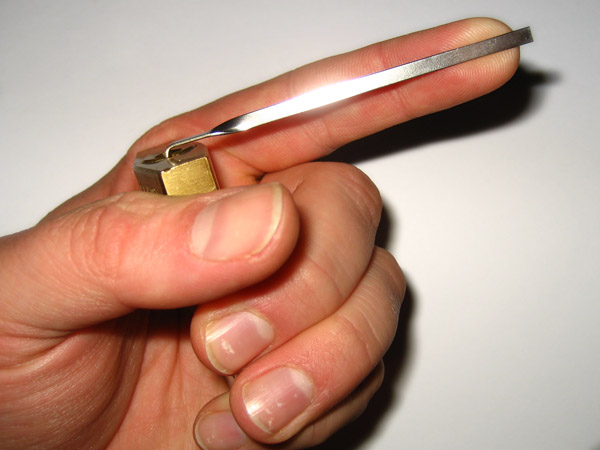Typical Turning Tool Position: “Edge of the Plug”
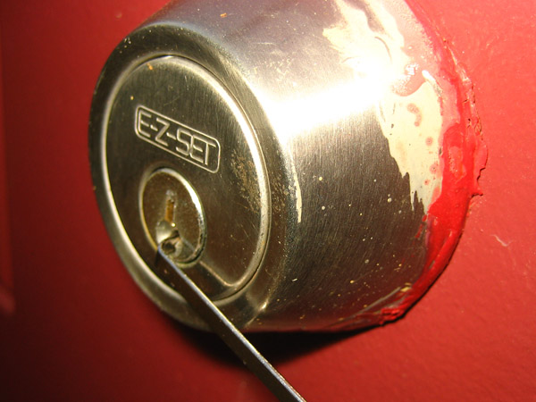Careful To Not Cause Extra Friction
XXX TBDWhich Direction Should You Turn?
XXX TBDWhich Direction Should You Turn?
XXX TBDWho Wants To Try?
Our Practice Locks
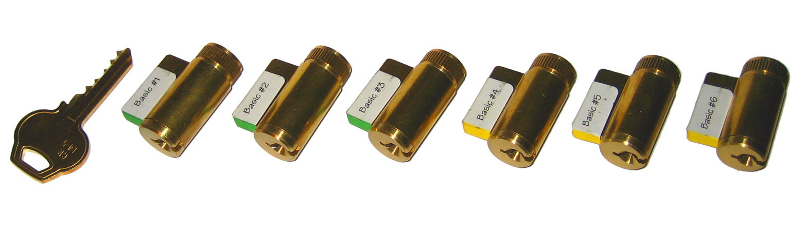 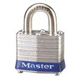

Our Practice Locks
The silver part is the front face…
… the brass ring is the rear!
Starter Exercises
XXX TBDStarter Exercises
XXX TBDStarter Exercises
XXX TBDStarter Exercises
XXX TBDDirect Lifting
XXX TBDRocking Lifting
XXX TBDOr Try Raking, Etc.
XXX TBDThe Two Most Important Things…
RELAX
The Two Most Important Things…
Thank You Very Much!
http://toool.us
info@toool.us
Come Join Us!
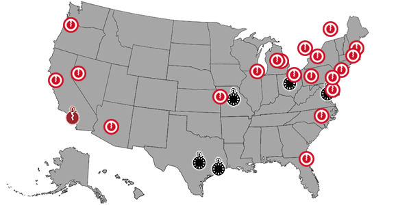Thank You Very Much!
http://toool.us
info@toool.us